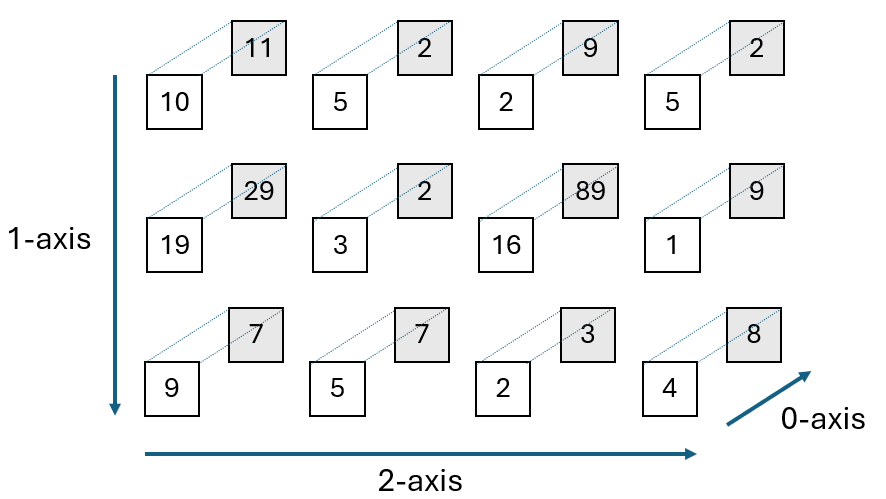
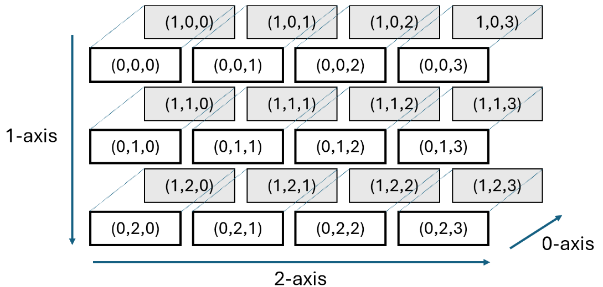

import numpy as np11 Higher-dimensional arrays
In this chapter we will look at arrays whose dimension is three or higher, as opposed to the one- and two-dimensional arrays we have seen so far. Many Python functions that we have seen also can be used on higher dimensional arrays.
11.1 Creating arrays
Recall that a two-dimensional array is a list of one-dimensional lists. In the same way a three-dimensional array is a list of two-dimenional arrays (which in turn are lists of one-dimensional arrays). A four-dimensional array is a list of three-dimensional arrays, etc.
Let us create a three-dimensional array.
A = np.array([
[[10,5,2,5],
[19,3,16,1],
[9,5,2,4]],
[[11,2,9,2],
[29,2,89,9],
[7,7,3,8]
]])
print(A)[[[10 5 2 5]
[19 3 16 1]
[ 9 5 2 4]]
[[11 2 9 2]
[29 2 89 9]
[ 7 7 3 8]]]Note that the shape of A is 2 \times 3 \times 4. This is because the outer list consists of two lists (the two-dimensional arrays), and every one of those lists contains again three lists (the one-dimensional arrays), and these in turn all have 4 elements.
print("The shape of A is ", np.shape(A))The shape of A is (2, 3, 4)Below we have given a visual representation of the array above, with the idea that the white boxes represent the first two-dimensional array, and the shaded boxes the second two-dimensional array.
We have also indicated the axes corresponding to the dimensions of the array in the figure below. The outer list corresponds to the 0-axis, the first inner list to the 1-axis, etc. We will come back to those later in this chapter.

We can index three-dimensional arrays in a similar way as we do two-dimensional arrays.
# Print two-dimensional array at index 0
print(A[0])[[10 5 2 5]
[19 3 16 1]
[ 9 5 2 4]]# Print row at index 2 of two-dimensional aray at index 1
print(A[1,2,:])[7 7 3 8]# Print element at index 0 of row A[1,2]
print(A[0,2,3])4An overview of all the indices of a 2 \times 3 \times 4 array is given in the figure below.

We can also use index slicing.
# Print from both two-dimensional arrays
# the rows at indices 0 and 1
# and columns at indices 1 and 2
print(A[:,0:2,1:3])[[[ 5 2]
[ 3 16]]
[[ 2 9]
[ 2 89]]]We can also create special arrays in higher dimensions, like the all-ones array.
# Create 3 x 4 x 2 array with ones (works with np.zeros() as well)
B = np.ones((3,4,2))
print(B)[[[1. 1.]
[1. 1.]
[1. 1.]
[1. 1.]]
[[1. 1.]
[1. 1.]
[1. 1.]
[1. 1.]]
[[1. 1.]
[1. 1.]
[1. 1.]
[1. 1.]]]Also, concepts like broadcasting work in higher dimensions. Below we add a two-dimensional array to a three-dimensional array, in which case the two-dimensional array gets added to each of the three inner two-dimensional arrays.
C = np.array([
[0, 0],
[2, 2],
[3, 3],
[1, 1]])
print(B + C) # Add two- to three-dimensional array[[[1. 1.]
[3. 3.]
[4. 4.]
[2. 2.]]
[[1. 1.]
[3. 3.]
[4. 4.]
[2. 2.]]
[[1. 1.]
[3. 3.]
[4. 4.]
[2. 2.]]]Functions like mgrid also work in higher dimensions. For example, we can create a three-dimensional grid of all points in \{1,2\} \times \{2,3,4\} \times \{4,5,6\} as follows.
# Recall that the end index of a slice is not included
X, Y, Z = np.mgrid[1:3,2:5,4:7]
print("X =\n",X)
print("Y =\n",Y)
print("Z =\n",Z)X =
[[[1 1 1]
[1 1 1]
[1 1 1]]
[[2 2 2]
[2 2 2]
[2 2 2]]]
Y =
[[[2 2 2]
[3 3 3]
[4 4 4]]
[[2 2 2]
[3 3 3]
[4 4 4]]]
Z =
[[[4 5 6]
[4 5 6]
[4 5 6]]
[[4 5 6]
[4 5 6]
[4 5 6]]]For every (feasible) combination of indices (i,j,k), the point (X_{ijk}, Y_{ijk},Z_{ijk}) now corresponds to a grid point in \{1,2\} \times \{2,3,4\} \times \{4,5,6\}. You can also create a more fine-grained grid, by including more points in every slice using a step size.
11.2 Itertools
A tool that is useful for enumerating all points in a higher-dimensional set is the itertools package.
import itertoolsLet’s consider again the set of points in \{1,2\} \times \{2,3,4\} \times \{4,5,6\}. We can enumerate over all such points using the product function, that takes as input the ranges of the individual coordinates and outputs all possible combinations as tuples.
x = np.array([1,2])
y = np.array([2,3,4])
z = np.array([4,6])
for point in itertools.product(x,y,z):
print(point)(1, 2, 4)
(1, 2, 6)
(1, 3, 4)
(1, 3, 6)
(1, 4, 4)
(1, 4, 6)
(2, 2, 4)
(2, 2, 6)
(2, 3, 4)
(2, 3, 6)
(2, 4, 4)
(2, 4, 6)You can also have the combinations be returned as arrays.
x = np.array([1,2])
y = np.array([2,3,4])
z = np.array([4,6])
for point in itertools.product(x,y,z):
print(np.array(point))[1 2 4]
[1 2 6]
[1 3 4]
[1 3 6]
[1 4 4]
[1 4 6]
[2 2 4]
[2 2 6]
[2 3 4]
[2 3 6]
[2 4 4]
[2 4 6]If the sets of all coordinates are the same, you can also use the repeat keyword argument. Suppose we want to enumerate all points in the set \{1,3,5\}^4. Then we can do the following.
a = np.array([1,3,5])
k = 4
for point in itertools.product(a, repeat=k):
print(point)(1, 1, 1, 1)
(1, 1, 1, 3)
(1, 1, 1, 5)
(1, 1, 3, 1)
(1, 1, 3, 3)
(1, 1, 3, 5)
(1, 1, 5, 1)
(1, 1, 5, 3)
(1, 1, 5, 5)
(1, 3, 1, 1)
(1, 3, 1, 3)
(1, 3, 1, 5)
(1, 3, 3, 1)
(1, 3, 3, 3)
(1, 3, 3, 5)
(1, 3, 5, 1)
(1, 3, 5, 3)
(1, 3, 5, 5)
(1, 5, 1, 1)
(1, 5, 1, 3)
(1, 5, 1, 5)
(1, 5, 3, 1)
(1, 5, 3, 3)
(1, 5, 3, 5)
(1, 5, 5, 1)
(1, 5, 5, 3)
(1, 5, 5, 5)
(3, 1, 1, 1)
(3, 1, 1, 3)
(3, 1, 1, 5)
(3, 1, 3, 1)
(3, 1, 3, 3)
(3, 1, 3, 5)
(3, 1, 5, 1)
(3, 1, 5, 3)
(3, 1, 5, 5)
(3, 3, 1, 1)
(3, 3, 1, 3)
(3, 3, 1, 5)
(3, 3, 3, 1)
(3, 3, 3, 3)
(3, 3, 3, 5)
(3, 3, 5, 1)
(3, 3, 5, 3)
(3, 3, 5, 5)
(3, 5, 1, 1)
(3, 5, 1, 3)
(3, 5, 1, 5)
(3, 5, 3, 1)
(3, 5, 3, 3)
(3, 5, 3, 5)
(3, 5, 5, 1)
(3, 5, 5, 3)
(3, 5, 5, 5)
(5, 1, 1, 1)
(5, 1, 1, 3)
(5, 1, 1, 5)
(5, 1, 3, 1)
(5, 1, 3, 3)
(5, 1, 3, 5)
(5, 1, 5, 1)
(5, 1, 5, 3)
(5, 1, 5, 5)
(5, 3, 1, 1)
(5, 3, 1, 3)
(5, 3, 1, 5)
(5, 3, 3, 1)
(5, 3, 3, 3)
(5, 3, 3, 5)
(5, 3, 5, 1)
(5, 3, 5, 3)
(5, 3, 5, 5)
(5, 5, 1, 1)
(5, 5, 1, 3)
(5, 5, 1, 5)
(5, 5, 3, 1)
(5, 5, 3, 3)
(5, 5, 3, 5)
(5, 5, 5, 1)
(5, 5, 5, 3)
(5, 5, 5, 5)Note that the product function gives a convenient way to enumerate over all entries in a k-dimensional array that has size n in all dimensions.
A = np.array([
[[10,5,4],
[19,3,1],
[9,5,7]
],
[[11,2,3],
[29,2,1],
[7,7,0]
],
[[11,2,3],
[29,12,1],
[17,70,0]
]])
k = np.ndim(A) # Number of dimensions
n, *_ = np.shape(A) # Common size of every dimension
for point in itertools.product(range(n),repeat=k):
print(A[point]) # Print entry as position 'point'10
5
4
19
3
1
9
5
7
11
2
3
29
2
1
7
7
0
11
2
3
29
12
1
17
70
011.3 Axis operations
We can also perform operations along axes in higher dimensional arrays. The outer list of an array corresponds to the 0-axis, the second outer list to the 1-axis, etc.
Below we again give the visualization of the axes of a three-dimensional array, where the coordinates in the boxes represent the position of an element in the array.
11.3.1 Arithmetic operations
If you perform an operation like summing elements along an axis of a k-dimensional array, you end up with a (k-1)-dimensional array.
A = np.array([
[[10,5,2,5],
[19,3,16,1],
[9,5,2,4]],
[[11,2,9,2],
[29,2,89,9],
[7,7,3,8]
]])
print("A = \n",A)A =
[[[10 5 2 5]
[19 3 16 1]
[ 9 5 2 4]]
[[11 2 9 2]
[29 2 89 9]
[ 7 7 3 8]]]print("Summing along 0-axis: \n", np.sum(A, axis=0))Summing along 0-axis:
[[ 21 7 11 7]
[ 48 5 105 10]
[ 16 12 5 12]]print("Summing along 1-axis: \n", np.sum(A, axis=1))Summing along 1-axis:
[[ 38 13 20 10]
[ 47 11 101 19]]print("Summing along 2-axis: \n", np.sum(A, axis=2))Summing along 2-axis:
[[ 22 39 20]
[ 24 129 25]]Note that in the last command, Python sums along the second axis, reducing the original 2 \times 3 \times 4 array to a 2 \times 3 array.
You can also fix the dimensions, so that the new array after summing remains a k-dimensional array. You can achieve this by setting the keyword argument keepdims to True (the default is False).
print("Summing along 2-axis fixing dimension: \n",
np.sum(A, axis=2, keepdims=True))Summing along 2-axis fixing dimension:
[[[ 22]
[ 39]
[ 20]]
[[ 24]
[129]
[ 25]]]11.3.2 Reshaping
We can also shape higher dimensional arrays into other higher dimensional arrays. In earlier chapters, we have seen how to reshape a two-dimensional array into a two-dimensional array of a different shape, or into a one-dimensional array.
A = np.array([[5,1,3,2,3,2],[5,2,9,3,8,5]])
print("A = \n",A)A =
[[5 1 3 2 3 2]
[5 2 9 3 8 5]]x = A.flatten() # Turn A into one-dimensional array of shape (12,)
print("x = \n",x)x =
[5 1 3 2 3 2 5 2 9 3 8 5]y = A.reshape(1,12) # Turn A into two-dimensional array of shape (1,12)
print("y = \n",y)y =
[[5 1 3 2 3 2 5 2 9 3 8 5]]B = A.reshape(4,3) # Reshape A to 4 x 3 array
print("B = \n",B)B =
[[5 1 3]
[2 3 2]
[5 2 9]
[3 8 5]]Recall that reshaping happens according to the largest axis (index) changing fastest principle. This means that when reshaping A into B, the matrix B gets filled in a row-by-row fashion (starting with the lowest row index) by placing in it the elements from A taken row-by-row.
That is, we fill the entries in B in the order (0,0), (0,1), (0,2), (1,0), (1,1), (1,2), (2,0), (2,1), (2,2), (3,0), (3,1), (3,2) with the elements of A taken in the order (0,0), (0,1), (0,2), (0,3), (0,4), (0,5), (1,0), (1,1), (1,2), (1,3), (1,4), (1,5).
We can also reshape, e.g., a three-dimensional array A into a two-dimensional array B. Because of the largest axis (index) changing fastest principle, this means the matrix B is again filled in a row-by-row fashion (i.e., along the 1-axis first; note that B has a 0- and 1-axis only).
The largest axis (index) changing fastest principle also applies to A, meaning that we start taking the entries from A first along its 2-axis, with index 0 for both the 0- and 1-axis. In other words, we start by taking entries from row A[0,0,:].
More conrete, we first take the entries 10,5,2 form the row A[0,0,:] and place them on the first row of B. Then we take the last element from this row, 5, and move up one index on the 1-axis (to the second row of the first two-dimensional array), and take the entries 19 and 3. Together with the 5 from the first row, these entries are placed on the second row of B. Once we have exhausted all the entries of the first two-dimensional array of A, we switch to the second two-dimensional array, i.e., we increase the index along the 0-axis by one.
A = np.array([
[[10,5,2,5],
[19,3,16,1],
[9,5,2,4]],
[[11,2,9,2],
[29,2,89,9],
[7,7,3,8]
]])
print("A = \n",A)A =
[[[10 5 2 5]
[19 3 16 1]
[ 9 5 2 4]]
[[11 2 9 2]
[29 2 89 9]
[ 7 7 3 8]]]B = A.reshape((8,3))
print("Reshaping A into 8 x 3 array B = \n",B)Reshaping A into 8 x 3 array B =
[[10 5 2]
[ 5 19 3]
[16 1 9]
[ 5 2 4]
[11 2 9]
[ 2 29 2]
[89 9 7]
[ 7 3 8]]We can also reshape a three-dimensional array into another three-dimensional array (with the same number of elements). Make sure you understand how, in the example below, the entries of A are used to fill the array B.
C = A.reshape((2,2,6))
print("Reshaping A into 2 x 2 x 6 array C = \n",C)Reshaping A into 2 x 2 x 6 array C =
[[[10 5 2 5 19 3]
[16 1 9 5 2 4]]
[[11 2 9 2 29 2]
[89 9 7 7 3 8]]]11.4 Unpacking
Sometimes the number of input arguments of a function only becomes clear after a user has set some input data.
For example, suppose we want to generate a k-dimensional grid, i.e., the points in
\prod_{i=0}^{k-1}\ \{a_i,a_i+1,\dots,b_i-1,b_i\}
for given values of a_0,\dots,a_{k-1},b_0,\dots,b_{k-1} with the meshgrid() function from NumPy. The meshgrid() function takes as input k ranges, and then generates a k-dimensional grid with those ranges. We have already seen the function mgrid() in an earlier chapter that achieves the same, but whose syntax is different.
Below all the points in the set \{1,2,3\} \times \{9,10\} = \{(1,9),(1,10),(2,9),(2,10),(3,9),(3,10)\} are generated. The first coordinate i of every point (i,j) \in \{1,2,3\} \times \{9,10\} is stored in the first two-dimensional array, and the second coordinate j in the second two-dimensional array. The sampe principle applies for higher-dimensional grids.
# a_0 = 1, b_0 = 3, a_1 = 9, b_1 = 10
range1 = np.array([1,2,3]) # np.arange(1,3+1)
range2 = np.array([9,10]) # np.arange(9,10+1)
x = np.meshgrid(range1,range2)
print(x)[array([[1, 2, 3],
[1, 2, 3]]), array([[ 9, 9, 9],
[10, 10, 10]])]Suppose now we want to generate a three-dimensional grid \{1,2,3\} \times \{9,10\} \times \{5,6\}, then we need to add another range variable range3, but also adjust the variable x by adding the new range to it as input argument.
range1 = np.array([1,2,3])
range2 = np.array([9,10])
range3 = np.array([5,6])
x = np.meshgrid(range1,range2,range3)
print(x)[array([[[1, 1],
[2, 2],
[3, 3]],
[[1, 1],
[2, 2],
[3, 3]]]), array([[[ 9, 9],
[ 9, 9],
[ 9, 9]],
[[10, 10],
[10, 10],
[10, 10]]]), array([[[5, 6],
[5, 6],
[5, 6]],
[[5, 6],
[5, 6],
[5, 6]]])]We can avoid having to adjust x, if we instead store the ranges in a list (or array). We name this list ranges here. We can unpack the elements in the list ranges as input arguments of the meshgrid() function using *ranges.
Unpacking the elements of a list or array, done with the *, means that the first element in the list, in our case the array with the first range, becomes the first input argument of meshgrid(), the second element of the list becomes the second input argument, etc.
We show this in the code below, which gives the same output as the code above.
ranges = [np.array([1,2,3]),np.array([9,10]),np.array([5,6])]
x = np.meshgrid(*ranges)
print(x)[array([[[1, 1],
[2, 2],
[3, 3]],
[[1, 1],
[2, 2],
[3, 3]]]), array([[[ 9, 9],
[ 9, 9],
[ 9, 9]],
[[10, 10],
[10, 10],
[10, 10]]]), array([[[5, 6],
[5, 6],
[5, 6]],
[[5, 6],
[5, 6],
[5, 6]]])]The use of unpacking is especially useful if the number of ranges only becomes clear after some input parameter has been chosen. For example, suppose we want to generate the k-dimensional binary grid \{0,1\}^k.
In the code below we only have to adjust the value of k if we want to increase the dimension of the grid. This you can not achieve without the use of unpacking, in general.
We first generate a two-dimensional array (recall this is a list of lists) ranges, where each of the k rows of this array is the two-element list [0,1]. We then unpack these ranges as input arguments of meshgrid() using *ranges.
k = 3
ranges = np.hstack((np.zeros((k,1)),np.ones((k,1))))
x = np.meshgrid(*ranges)
print(x)[array([[[0., 0.],
[1., 1.]],
[[0., 0.],
[1., 1.]]]), array([[[0., 0.],
[0., 0.]],
[[1., 1.],
[1., 1.]]]), array([[[0., 1.],
[0., 1.]],
[[0., 1.],
[0., 1.]]])]